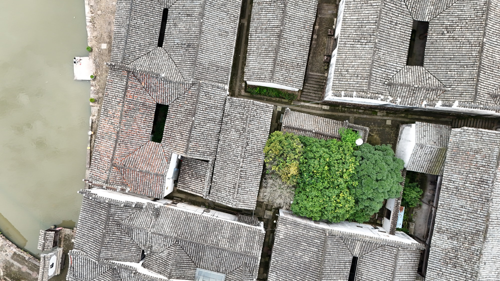

国保传统民居
屋面相连的村居一角姜海林民居
姜海林民居是全国重点文物保护单位“新叶村乡土建筑”中的一座传统民居。屋面与相邻老宅彼此衔接，是村中连片居住建筑的一部分。
01
把一户住宅放回古村

从较高处望去，姜海林民居与周围住宅共同组成连续的屋面景观。层层相接的屋脊让一户住宅回到村落整体，也显出新叶传统民居成片保存的特点。

姜海林民居是全国重点文物保护单位“新叶村乡土建筑”中的一座传统民居。屋面与相邻老宅彼此衔接，是村中连片居住建筑的一部分。

从较高处望去，姜海林民居与周围住宅共同组成连续的屋面景观。层层相接的屋脊让一户住宅回到村落整体，也显出新叶传统民居成片保存的特点。